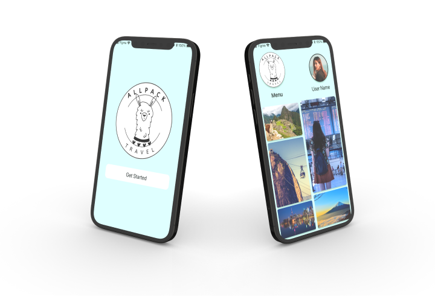

User Research
User interviews were conducted to collect qualitative and quantitative data from participants.

User Persona
We discovered that young travelers find the searching process very demanding.
.png)
Storyboard
In order to define the User flow, I analyse he storyboard and the User Journey.
Problem Statement
How we might ease travel planning and information organization for young travelers to improve trip planning efficiency?
At this part of the process, I designed low-fidely wireframes representing how the product will look like, this helps to understand and place each component and element in the mobile App layout.
In order to understand if the product will work effectively, I conducted User Testings. Where, participants tested the mobile app, I watched and listened to them to identify any issues and points to improve.
After the User testing, I identified that User were struggling to understand some buttons, close modals, and return to the main page.
All iterations were completed in the high-fidelity prototype to create a more user-friendly mobil app.

Prototype
Finally, after User Testing iterations, I built the high-fidlity prototype, representing how the AllPack mobile app will look like and how its iteractions will help users to search and book trips in a friendly and effcient way.
Check it